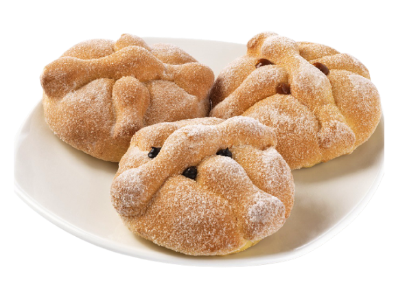
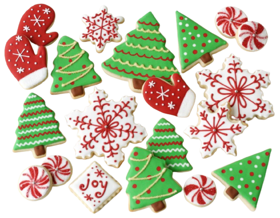

Día de la
Madre
Es muy habitual en fechas especiales como es el Día de la Madre, ya que las personas lo entregan como regalo, ademas de ser llamativo, permite una infinidad de sabores distintos y suelen gustar a todos.
Día del
Padre
Es muy común en cumpleaños y fiestas, sin embargo soy muy sobresalientes en festividades especiales como es el Día de Padre ya que sorprende, además de poder elaborarlo de diversos sabores y diseños segun desee el cliente.
Halloween
El pan de muerto, es elaborado en fechas tradicionales como lo es Halloween, ya que se trata de una especie de bollo que simula un cráneo y al que se le pone figuras simulando huesos u otras formas.
Día del Amor
y la Amistad
Es un día en el que se costumbra a regalar diversos detalles. Aunque sigan pasaron los siglos este día es tan emblemático como el regalo que se entregan los enamorados: chocolate, un símbolo gastronómico del amor.
Día de
Pascua
Es la fiesta más importante del calendario cristiano, debido a que se celebra la resurrección de Jesucristo, por lo que se acostumbra a celebrar este fecha con mucho color, haciendo alusión al amor y la felicidad.
Navidad
Uno de los dulces preferidos de los niños para Navidad son las galletas. Y para hacerlas mucho más atractivas y diferentes podemos decorarlas, incluso podemos hacerlas con ellos para lograr hacerlas más apetecibles.